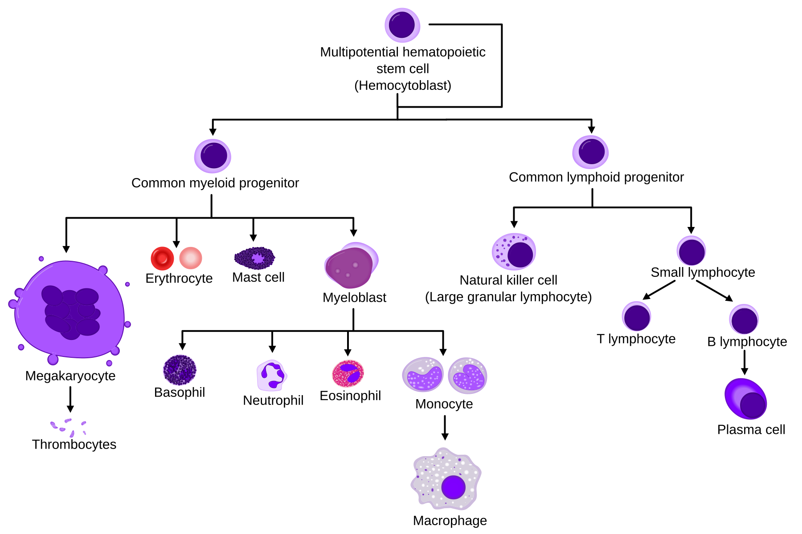
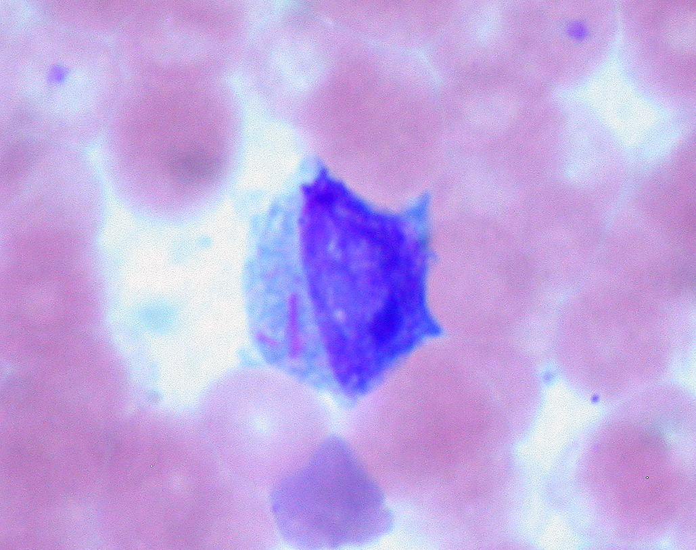

Your blood is not just a liquid — it is a living product your body manufactures every day, deep inside your bones. Understanding how that production breaks down is the key to understanding Acute Myeloid Leukaemia (AML).
The Bone Marrow Factory
Inside large bones — your hips, sternum, and thigh bones — sits a spongy tissue called bone marrow. Within it are haematopoietic stem cells: master template cells that divide and slowly mature into three essential products: red blood cells (carrying oxygen to every tissue), platelets (clotting agents that seal wounds), and white blood cells (your immune system's infection fighters). This lifelong process is called haematopoiesis. In AML, it is sabotaged from within.

Haematopoiesis (human) diagram by A. Rad & Mikael Häggström is licensed under CC BY-SA 3.0. Source: Wikimedia Commons.
One Cell Goes Rogue
Every cell in your body follows the same instruction manual: DNA — a long chemical code that tells each cell which proteins to make and how to behave. AML begins when a myeloid progenitor cell (a mid-stage cell on its way to becoming a red cell, platelet, or white cell) acquires a damaging error in its DNA. This mutation is not inherited — it accumulates over a lifetime of normal cell divisions, which is why AML primarily affects older adults (median diagnosis age: 68).
The damaged DNA triggers two simultaneous failures. First, differentiation arrest: the cell loses the ability to mature. It freezes at an immature stage called a blast. Second, uncontrolled proliferation: the blast keeps dividing relentlessly, churning out billions of identical, non-functional copies.
Blasts Take Over
Bone marrow has limited space. As leukaemic blasts multiply, they physically crowd out the healthy stem cells responsible for normal blood production. When blasts exceed 20% of all bone marrow cells, the diagnostic threshold for AML is crossed — and the factory effectively shuts down.

Auer rods in leukemic blast by Ed Uthman (2008) is licensed under CC BY 2.0. Source: Wikimedia Commons.
From Cellular Chaos to Symptoms
Three critical shortages emerge as the marrow fails, each producing distinct symptoms directly traceable to the blast takeover:
| Cell depleted | Resulting condition | Symptoms you experience |
|---|---|---|
| Red blood cells | Anaemia — insufficient oxygen delivery | Persistent fatigue, pallor, breathlessness on mild exertion |
| Platelets | Thrombocytopenia — clotting failure | Easy bruising, pinpoint skin bleeds (petechiae), prolonged bleeding, bleeding gums |
| White blood cells | Neutropenia — immune collapse | Repeated infections, unexplained fevers, slow-healing wounds |
Why Age Increases the Risk
Each cell division carries a small risk of a DNA copying error. Over decades these errors accumulate — a process called clonal haematopoiesis. Many over-70s carry low-level mutations without ever developing AML; the disease only emerges when enough mutations converge to block maturation and drive uncontrolled growth. This explains why AML is rare before 40 but rises sharply through the 60s and beyond.
AML is the story of a single rogue cell that refused to grow up — and in doing so, quietly dismantled the factory that kept the rest of the body alive.